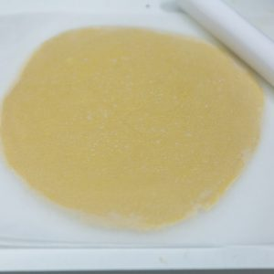
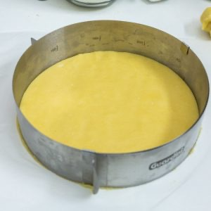
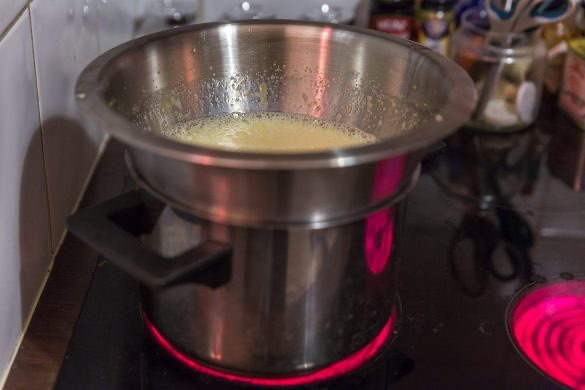
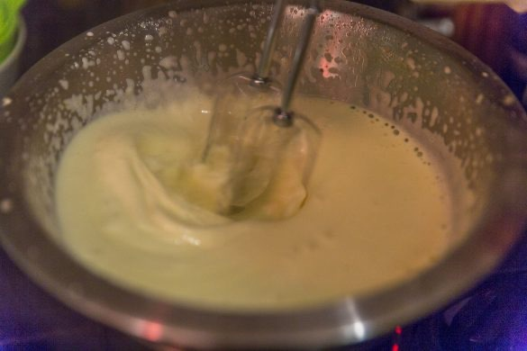
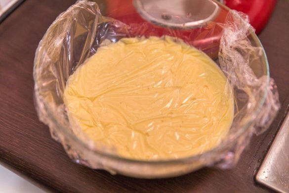
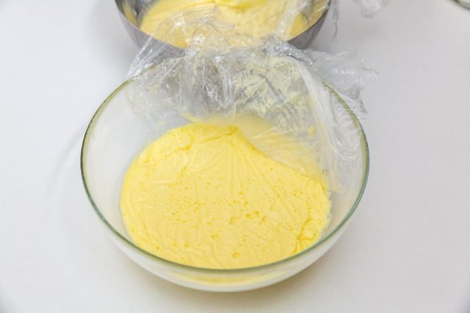
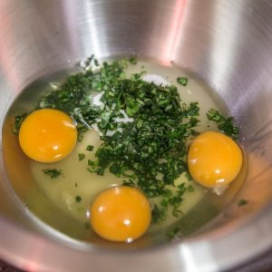
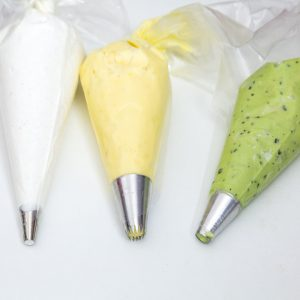
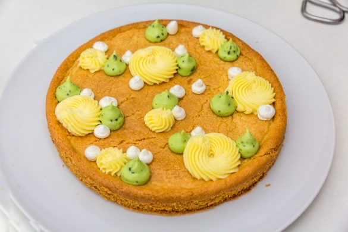
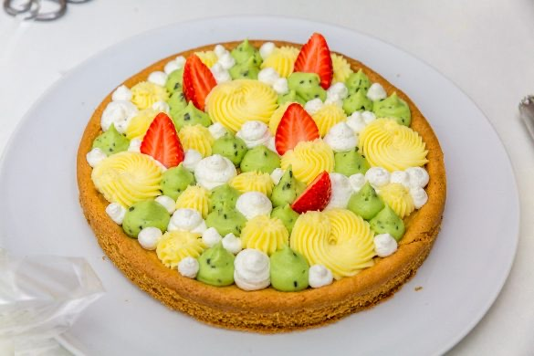

Fantastik fraises citron basilic
Aujourd’hui, je vous retrouve avec une recette qui respire le beau temps et qui donnerai presque l’impression que le soleil temps s’est enfin installé (ici il n’en est rien!). Je vous retrouve donc avec cette tarte façon fantastik fraises citron basilic et qui je vous l’assure est un vrai régal!
Ce fantastik je l’avais préparé pour Pâques lors d’un déjeuner familial et je peux vous dire qu’il ne restait plus une seule part 🙂 ! Les gariguettes étaient devenues un peu trop présentes sur les étals et je n’ai donc pas pu su résister encore une fois! J’aime tellement le concept de ces fameux gâteaux appelés fantastiks que j’ai sauté sur l’occasion pour en faire un !
Histoire de remettre les choses dans l’ordre et pour ceux qui ne savent pas du tout de quoi je parle voici quelques explications concernant ce gâteau au drôle de nom.
Le fantastik est un gâteau hybride mi-entremet, mi-tarte et qui explose littéralement en bouche de part toutes ses saveurs! Créé par « Mr Christophe Michalak » ce gâteau se compose généralement de fruits frais (et de saison) , sa base est généralement une base « sablée » recouverte de crèmes aux diverses saveurs se mêlant parfaitement bien aux fruits sélectionnés pour l’occasion ! Le tout avec un gâteau comme celui-ci est de se l’approprier et de s’amuser avec les formes, saveurs et fruits qui le composent! Chaque fantastik est donc unique et moi j’ai décidé aujourd’hui de vous présenter ma version du fantastik fraises citron basilic (et vous devriez vraiment vraiment j’insiste le tester).
Si vous êtes tentés à votre tour lâchez-vous et créez votre propre fantastik et vous me direz ce que ça a donné 🙂 Vous allez voir la recette peut paraître très très longue mais il n’en est rien 😉 . Avec un peu d’organisation c’est largement faisable! Comme je l’ai indiqué plus bas vous pourrez préparer la base (qui est ici un sablé breton) la veille ainsi que les crèmes citron et basilic (il faudra juste les retravailler le lendemain pour qu’elles soient un peu moins figées)! Le jour « J » il ne vous restera plus que le montage du fantastik et la chantilly au mascarpone et à la vanille à monter! A votre tour maintenant et place à la recette!!
Ingrédients
- Jaune d'oeuf - 3
- Sucre en poudre - 130g
- Beurre mou - 150g
- Farine - 200g
- Fleur de sel - 2 pincées
- Levure chimique - 1 sachet
- Mascarpone - 60g
- Crème entière (35%) - 60g
- Sucre glace - 3 càs
- Vanille - 1 gousse (ou 1càc d'extrait de vanille)
- Gélatine - 1 feuille
- Sucre - 45g
- Beurre - 75g
- Oeuf à température ambiante - 1 gros ou 2 moyens
- Jus de citron - 45ml
- Zeste de citron
- Gélatine - 1 feuille
- Sucre - 45g
- Beurre - 75g
- Oeuf - 1 gros ou 2 moyens
- Feuilles de basilic - Les feuilles d'un petit bouquet
Instructions
- Dans un bol, mélanger la farine, la levure et le sel
- Blanchir les jaunes d’œufs avec le sucre en fouettant énergétiquement
- Ajouter le beurre ramolli
- Mélanger à l'aide d'une cuillère en bois
- Lorsque le mélange est homogène, tamiser le mélange farine-levure-sel
- Continuer de mélanger
- Quand le mélange est homogène envelopper la pâte de film alimentaire
- Placer au frais pendant 1 à 2h minimum
- Préchauffer le four à 180°
- A la sortie du frigo, étaler la pâte sur une feuille de cuisson légèrement farinée
- Abaisser la pâte de manière à obtenir une épaisseur de 4 à 5mm
- A l'aide d'un cercle à tarte de 22 cm découper un disque de pâte
- Laisser le disque de pâte à l'intérieur du cercle (sinon à la cuisson le sablé va totalement s'étaler)
- Enfourner à 180° pour 15 à 20 minutes
- Sortir le fond de pâte du four et laissez-le entièrement refroidir
- Pendant ce temps préparer les crèmes
- Faire ramollir la gélatine dans de l'eau froide
- Dans un saladier en inox, fouetter le zeste, le jus de citron le sucre et les œufs
- Placer le saladier au-dessus d'une grande casserole (un faitout par exemple) contenant de l'eau frémissante
- L'eau ne doit pas toucher le saladier
- Continuer de fouetter au-dessus de l'eau frémissante jusqu'à ce que le mélange atteigne 80°C
- Une fois le mélange à 80°C, sortez-le de la casserole et versez-le dans le bol de votre robot
- Plonger la gélatine essorée et mélanger
- Mélanger à vitesse moyenne en ajoutant peu à peu le beurre de manière à ce qu'il soit bien amalgamé
- Filmer au contact et laisser au frais pendant que vous préparez les autres crèmes
- Ciseler très très finement le basilic
- Faire ramollir la gélatine dans de l'eau froide
- Dans un saladier en inox, fouetter le sucre et les œufs et ajouter le basilic
- Placer le saladier au-dessus d'une grande casserole (un faitout par exemple) contenant de l'eau frémissante (comme pour la crème au citron)
- L'eau ne doit pas toucher le saladier
- Continuer de fouetter au-dessus de l'eau frémissante jusqu'à ce que le mélange atteigne 80°C
- Une fois le mélange à 80°C, sortez-le de la casserole et versez-le dans le bol de votre robot Si vous ne souhaitez pas avoir les morceaux de basilic dans votre crème, vous pouvez passer le mélange au chinois avant de le verser dans le bol de votre robot
- Ajouter la gélatine essorée et mélanger
- Mélanger à vitesse moyenne en ajoutant peu à peu le beurre de manière à ce qu'il soit bien amalgamé
- Laisser au frais pendant que vous préparez la crème au mascarpone
- Verser la crème, les graines d'une gousse de vanille et le mascarpone dans le bol de votre robot
- Monter votre crème en chantilly
- Ajouter le sucre glace
- Mettre vos crèmes dans des poches à douilles armées des douilles que vous souhaitez utiliser
- Lorsque votre sablé est bien froid (s'il est encore chaud lorsque vous apposerez de la crème dessus elle va fondre! Il faut donc attendre^^) déposer des petites touches de crèmes selon l'ordre (si vous en avez un) que vous souhaitez donner à votre gâteau.
- Couper les fraises en deux dans le sens de la longueur et déposé la un peu partout une fois que vous aurez fini avec les crèmes
- Conserver au frais avant de servir (pensez à sortir le fantastik du frigo environ 15 minutes avant de servir sinon la crème sera un peu trop figée!)
- C'est frais, c'est bon et c'est beau! Succès garanti!










Les tips de la communauté
Pièce pâtissière magnifique admirée pour son esthétique et ses saveurs harmonieuses. L'association fraise-citron-basilic plaît beaucoup. Plusieurs montages réussis confirmant une recette bien expliquée et adaptable.
Astuces
- Ajouter un peu de colorant alimentaire vert (gel Wilton) à la crème au basilic pour une belle teinte
- Utiliser les douilles Wilton 2A, 6B et 12 pour le rendu visuel similaire
- Crème et pâte peuvent être faites la veille, montage le jour même possible
Variantes suggérées
- Remplacer la gélatine par de l'agar-agar (rapport: 6g gélatine = 2g agar-agar)
- Adapter les fruits selon la saison (abricots, brugnons en été plutôt que fraises)
- Remplacer la crème au basilic par une crème à la fraise pour un goût universellement apprécié
Ajustements signalés
- Crèmes trop fermes si montées la veille - les retravailler légèrement avant service